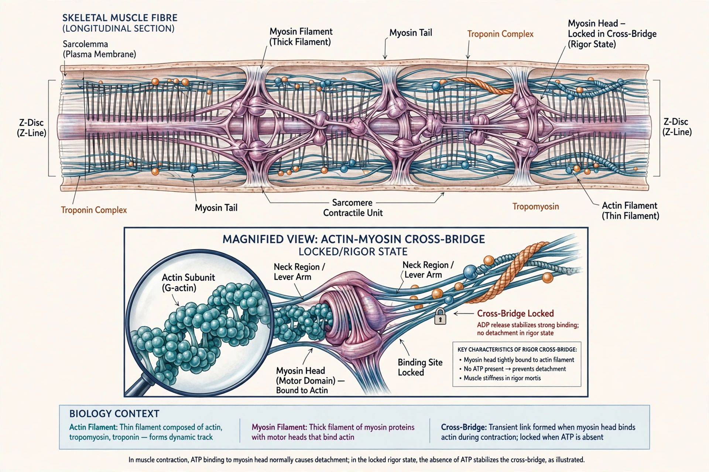

Rigor mortis

Rigor mortis (Latin: rigor "stiffness", mortis "of death") is the post-mortem stiffening of the muscles of a body, one of the recognisable signs of death. It is caused by chemical changes in muscle fibres after death: with no ATP available, the myosin heads of muscle fibres cannot detach from actin filaments, leaving the muscles locked in a contracted, rigid state until decomposition breaks down the proteins.
Mechanism
In life, contraction at each neuromuscular junction ends with relaxation requiring ATP to detach myosin cross-bridges and to pump calcium back into the sarcoplasmic reticulum. After death, cellular respiration ceases, ATP is depleted, membrane pumps fail, and calcium leaks into the cytosol, triggering cross-bridge formation that cannot be reversed. The result is sustained rigidity. Rigor ends when autolysis and bacterial putrefaction degrade the contractile proteins.
Timeline
Under temperate conditions, rigor typically begins 1–4 hours after death, becomes complete by about 6–12 hours, persists for roughly 12–24 hours, and passes off over the following day as decomposition advances (a pattern often summarised by "Nysten's rule," in which smaller muscles stiffen first). The timeline varies greatly with temperature, the deceased's muscular development, and exertion or convulsions shortly before death; heat and prior exertion accelerate onset, while cold delays it. Forensic pathologists therefore use rigor only as a rough indicator of the post-mortem interval, alongside algor mortis (cooling) and livor mortis (lividity).
Applications
In forensic medicine, the state and distribution of rigor can help estimate time of death and may reveal whether a body was moved after rigor developed. In the meat industry, rigor mortis affects texture and water-holding capacity; the timing of chilling relative to rigor influences tenderness, and pre-rigor processing is managed carefully in abattoirs.